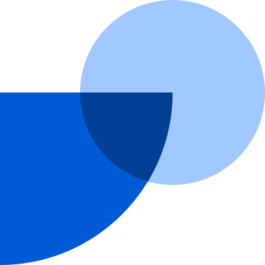

Product and Growth Marketing leader.
Building with LLMs for 3+ years.
Native English and Spanish speaker.
Co-Founder & CEO
Faces · Full-time
Jan 2023 – May 2026 · 3 yrs 5 mos
- Co-founded and led Faces, presentations where every slide is as dynamic as the web, generated by AI. Launched in Feb 2026, close to 100k signups.
- We also shipped several experimental products: an LLM-product prototyping canvas, autonomous workers, an AI-native workspace, and a Chrome extension that generated new interfaces on top of web pages.
- Hi Ventures and Bessemer are backers. My co-founders run it today.
Head of Growth & VP of Product

Fintual · Full-time
Mar 2019 – Jan 2023 · 3 yrs 11 mos
- Employee No.11 at Fintual, which makes investing easy for people in LatAm. We grew from $10M to $650M in assets under management in four years. By the end I was leading a team of 80+.
- I ran growth: content, product-led referral loops, lifecycle outbound communication, and community events.
- As VP of Product I organized the core offering, structuring our financial products into one coherent suite.
- Sequoia-backed. Fintual’s founders later invested in Faces.
Co-founder & CEO
El Vaso Medio Lleno
Jun 2014 – Mar 2017 · 2 yrs 10 mos
- El Vaso Medio Lleno was a digital media startup that focused on positive content and got 23M monthly content views cross-platform.
B.A. in Humanities and Social Sciences · Law degree, J.D. equivalent (Licenciado en Ciencias Jurídicas)
Pontificia Universidad Católica de Chile
2006 – 2012
Six-year program: five years of study plus a graduation examination. Minor in Entrepreneurship. Graduated magna cum laude. LatAm’s #1 university.
Full Stack Web Development
Le Wagon
2021 – 2021
Published behavioral research in the Academy of Management Proceedings, 2023.
I grew up in Tokyo and Santiago. Now in the Bay Area. I hold a green card as an alien of extraordinary ability.
Claude Code, Cursor, Figma, Flora AI, Notion, Raycast